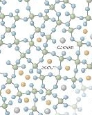

Kiteinen ja amorfinen piioksidi (kuva: MIT.edu)
Soodalasin rakenne (kuva: New York Times) Keltaiset pallurat ovat natrium-atomeja.
Meitä kiinnostaa enemmän, mitä tapahtuu jäähtyessä. Juuri nolla-asteessa vesi on vielä virtaavaa. Hitusen sen alapuolella, se on kiinteää jäätä. Tällä rajalla veden molekyylit luovuttavat lämpöenergiaa ja liikahtavat sellaisiin paikkoihin, joissa sitoutunut energia on mahdollisimman pieni. Syntyy säännöllisiä jääkiteitä. Kaikki kiinteät aineet ovat kiteisiä.
Kuitenkin myös neljäs olomuoto on mahdollinen, lasimaisuus. Ajatellaan että veden voisi jäähdyttää salamannopeasti, niin että molekyylit eivät ehtisi liikahtaa paikkoihinsa kiteessä, mutta olisivat menettäneet jo kaiken liike-energiansa. Silloin se olisi amorfinen, kieytymätön, kiinteä aine. Eräänlaista lasia.
Lasinmuodostuksen edellytyksenä on siis hitaus. Hitautta edesauttaa viskositeetti, juoksevuuden vastakohta. Tahmea siirappi valuu hitaammin kuin vesi. Toinen hitautta aiheuttava tekijä voi olla molekyylirakenne. Monien muovien molekyyliketjut ovat pitkiä, ja niiden järjestäytymiseen kiteeksi tarvitaan enemmän aikaa kuin jäähdyttämiseen kiinteäksi. Luonnossakin esiintyy vahoja ja resiinejä (=pihkaa) joka käyttäytyy näin, saa lasimaisen olomuodon normaalilämmössä.
Kvartsilla, SiO2, on tällainen ominaisuus. Se voi kiteytyä tai muodostaa lasia.
|
Kiteinen ja amorfinen piioksidi (kuva: MIT.edu) |
| Kun joukkoon lisätään suurikokoisempia natriumatomeja soodasta, epäsäännöllisyys kasvaa. |
|

Soodalasin rakenne (kuva: New York Times) Keltaiset pallurat ovat natrium-atomeja. |
Lyijy voi myös osallistua verkoston muodostamiseen. Silloin saadaan lyijykristallia. Lyijylasilla on suuri taitekerroin, ja se on pehmeämpää kuin sooda-kalkkilasi. Siksi sitä on helpompi hioa. Lyijylasi on suosittua valutöissä alhaisemman lämpöalueen ja suuremman juoksevuutensa takia. Voimakas valontaitto lisää sen houkuttelevuutta.
Boori on myös verkostoa muodostava aine, joka on tuttu borosilikaattilasista. Borsilikaatilasi kestää kuumuutta sooda-kalkkilasia paremmin samoin kemikaaleja. Taidelasina sitä käytetään lasihelmien tekoon. Kuumansiedon takia se on helmenteossa helpommin jäähdytettävää.
Muut oksidit muovaavat verkostoa ja sen mikana lasin ominaisuuksia. Näitä voi olla sooda N2O, potaska K2O, Litium Li2O, Kalsium CaO, Magnesium MgO ja lyijy PbO. Kun muovaavia aineksia lisätään, pii-happi sidosten määrä vähenee. Muovaavan aineksen lisääminen helpottaa lasin käsittelyä alentamalla sulamispistettä ja pienentämällä viskositettia. llian suuri muovaavien ainesten määrä voi heikentää verkkorakennetta niin paljon että jäähtyessä tapahtuu kiteytymistä eikä lasinmuodostusta. Sulatuslasien valmistuksessa tätä kontrolloidaan, ja ne vastustavat kiteytymistä eli devitrifioitumista tavallista sooda-kalkkilasia paremmin.
Pelkkä pii-sooda-lasi ei kestä vettä. Kalkin lisäämisellä saadaan lasi vettä kestäväksi.| tyyppi | SiO2 | Na2O | K2O | CaO | MgO | B2O3 | Al2O3 | muu | kuvaus |
| Sooda-kalkkilasi | 72 | 14 | 9 | 4 | 1 | ikkuna-,pullo- ja taidelasit | |||
| Kvartsilasi | 99.5+ | Suurta kuumuutta kestävät sovellukset Pieni lämpölaajenemine läpäisee UV-valoa |
|||||||
| Borosilikaatti | 80.5 | 3.8 | 0.5 | 12.9 | 2.2 | lämpöä ja kemikaaaleja kestävä lasi, laboratoriolasi |
|||
| optinen piilasi | 54 | 1 | 8 | 37 PbO | voimakkaasti valoa taittava. Lyijykristalli on suunnilleen samanlaista |
||||
| Pintakarkaistu lasi | 56 | 16 | 2 | 2 | 2 | 19 | 4 TiO2 | lasivuoat |
Kun lasilla ei ole tarkkaa sulamispistettä, on yleinen uskomus että se on normaalilämmössäkin hyvin hitaasti juoksevaa. Tämä on myytti. Tarkasti ottaen lasi on meta-stabiilia. Aina joskus voi jokin atomi ulkoisen energian vaikutuksesta liikahtaa, mutta havaittavan valumisen syntymiseen tarvitaan miljoonia vuosia.
| väri | Metalli | kommentti |
| Vahva, syvä sininen | koboltti | |
| sininen | kupari | |
| vihreä | kromi | Aventuriinissa on myös metallisia kromihiukkasia |
| Vihreä | rauta | kirkas lasi näyttää usein hieman vihertävältä rautajäämien takia |
| lila | mangaani | käytetään usein kompensoimaan raudan aiheutamaa vihreyttä |
| punainen | kupari | |
| punainen | kulta | |
| Keltainen | kadmium | erittäin myrkyllien oksidina |
| keltainen | hopea | värjää hyvin pieninä pitoisuuksina. Mm hopeasaven polttaminen voi jättää uunilevyyn värjäävän jäljen |
| musta | >rauta |
Väreistä voi oppia lisää sivuilta BE väriluettelo1 ja BE väriluettelo2
Lasia voi kyllä itse pintavärjätä värillisillä lasijauheilla (friteillä) Katso Frittimaalaus tai emaleilla. Lasimaalaus onkin oma taiteenlajinsa.
Lähteet:
Mit_edu
New York Times
Bullseye Glasstips
Bullseye Torchtips
Lani McGregor (2)